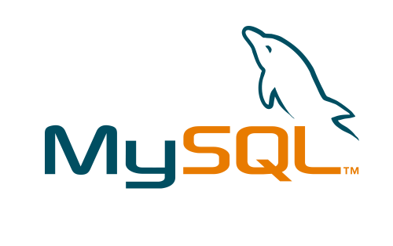
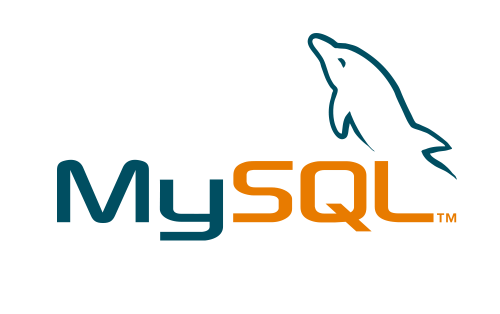

Formation
2021 Afpa, Paris – Développeur web et web mobile - Certificat professionnelle de niveau 5.
Projet tutoré Afpa Sugar Meter.
Front-end
- Maquetter une application
- Réaliser une interface utilisateur web statique et adaptable
- Développer une interface utilisateur web dynamique
- Réaliser une interface utilisateur avec une solution de gestion de contenu ou e-commerce
Back-end
- Créer une base de données
- Développer les composants d’accès aux données
- Développer la partie back-end d’une application web ou web mobile
- Élaborer et mettre en œuvre des composants dans une application de gestion de contenu ou e-commerce
2012 Université ISEM, Nice - Master 1 - Banque finance
Spécialité : Économétrie, finance de marché, analyse de risque, choix financier de l'entreprise, …
Mémoire
: Développement d'une application Smartphone -
Consulter le
mémoire
2007-2011 Université ISEM, Nice - Licence 3 – Science économique et gestion
Matières principales : Macro- & Microéconomies, Analyses financières, Commerce international, ...
2006 V.Hugo, Poitiers - 1ère BTS Management des Unités Commerciales
Matières principales : Management, Économies, Marketing, Communication, …
2005 Marcelin Berthelot, Châtellerault – Bac STT AAC. Avec mention AB
Matières principales : Économies, marketing, commerce, communication, ...
Expériences professionnelles
2018 - 2020 Client mystère, MV2 et Qualimetrie – Nice et Paris
Évaluations de plusieurs agences bancaire.
- Qualités rédactionnelles
- Observation active
- Esprit de synthèse
- Méthodologie d'évaluation
2009 - 2018 Entrepreneur, Global Web Business - Paris
Interventions au niveau développement stratégique et conception.
- Étude de marché
- Support de communication
- Analyse statistique
- Conception site web
- Solutions E-business
- Budgétisation de projets
2014 - 2015 Assistant, American Entertaiment Investor – Los Angeles
En tant qu'assistant du business développer, j'ai pu travailler sur diverses starts up, projets de diversification d’investissement et levé de fonds.
- Gestion d’agenda
- Étude documentaire, synthèse
- Analyse statistique
- Organisation de déplacement
- Résolution de problème
2008 Archiviste, Thalès Avionics – Châtellerault
Organisation et accessibilité des Services Bulletins (fiche technique d'évolution du matériel) pour les différentes lignes de réparation.
- Utilisation de l'outil SAP
- Rigueur
2007 Orders manager, Thalès Avionics – Châtellerault
J'ai pris part à la gestion du département sous-traitance, coordination des commandes sous-traitants, TBUs (Technical Business Units) ainsi que des filiales du groupe Thalès.
- Suivie des commandes
- Élaboration de devis
- Traitement avec SAP
- Facturation sous EXCEL